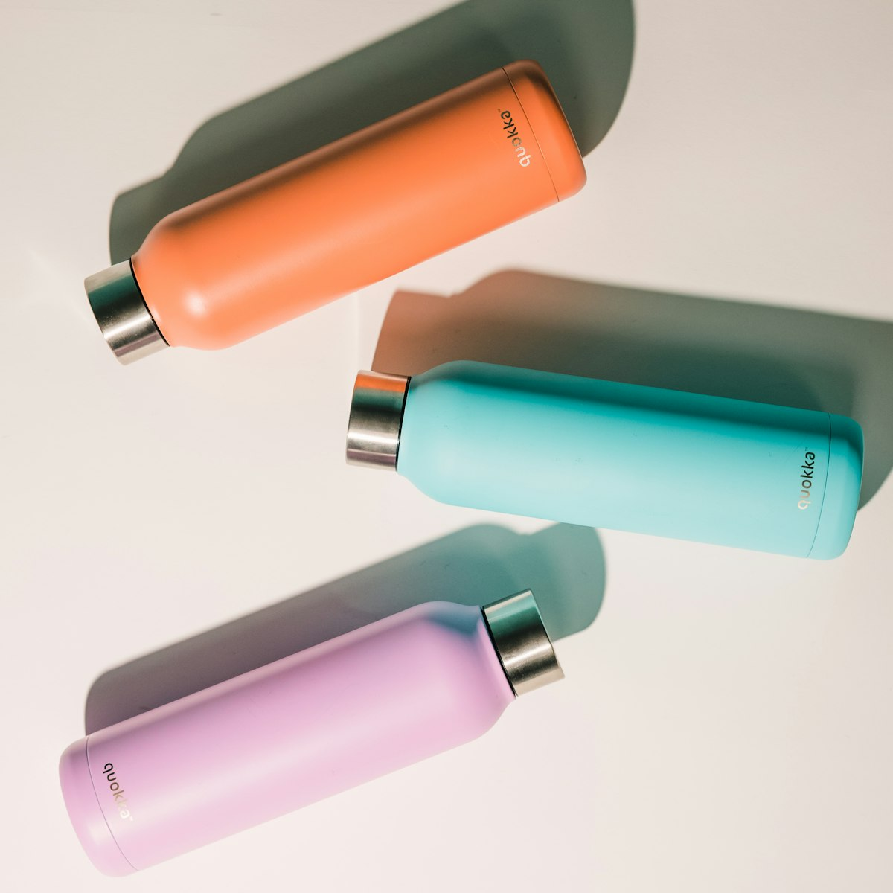

- オーストラリアの水道水はそのまま飲めるため、マイ水筒があれば水代とペットボトルごみを減らせる
- 変圧器は炊飯器以外にもヘアアイロン・加湿器等、日本の家電全般に使える汎用アイテム
- インスタント味噌汁は軽量・日持ちし、ホームシック対策としても定番
炊飯器の記事や洗濯ネットの記事に続いて、この記事では渡航後の生活で「持ってきてよかった」「なくて地味に困った」消耗品を整理します。
水筒(マイボトル)
オーストラリアの主要都市の水道水は、そのまま飲用に使える基準を満たしています。マイ水筒を持ち歩けば、外出先でペットボトル飲料を買うコストを抑えられ、州によって進むプラスチック規制(使い捨てプラスチックの提供規制等)にも自然に対応できます。保冷タイプなら、夏場の屋外での配達・通学時にも役立ちます。
変圧器(炊飯器以外にも使える)
炊飯器の記事では炊飯器専用の対応を扱いましたが、変圧器自体はヘアアイロン・加湿器・電気シェーバーなど、日本の100V専用家電全般に使い回せる汎用アイテムです。購入時は、使いたい家電の消費電力(W)に対応した容量の変圧器を選ぶことが重要です。
日本の味噌汁・インスタント食品
軽量で賞味期限が長く、スーツケースの隙間に入れやすいことから、インスタント味噌汁は定番の持ち物です。オーストラリアの主要都市には日系スーパーがあり現地調達も可能ですが、価格は割高になりがちです。渡航直後や体調を崩した時の「ホッとする味」として、数食分は持っておくと安心という声が多いアイテムです。
その他、地味に役立つもの
- 日焼け止め: オーストラリアは紫外線が非常に強く、現地の皮膚科医療団体も高SPFの使用を推奨している。使い慣れたものを渡航前に用意しておくと安心
- 折りたたみ傘: 天気が変わりやすい地域もあり、荷物にならないコンパクトなものが便利
- 密閉袋(ジップロック等): 食品の保存だけでなく、書類や小物の水濡れ防止にも使える
実際に持っていって良かったもの

保温・保冷 ステンレスボトル(0.6L)
水道水がそのまま飲める前提で、渡航中ずっとこのボトルに入れて持ち歩いていました。ペットボトルを買わなくて済む分、地味に節約になります。
商品を見る
フリーズドライ味噌汁(いろいろな種類の詰め合わせ)
本当に気持ちがあったまるし、渡航中とりあえずこれを飲んでいました。持ち物の中で一番「持ってきて良かった」と感じたものです。個包装で日持ちもするので、体調を崩した時にも重宝します。
商品を見るおまけ: カレールーも持っていくと便利
味噌汁と同じく、日本のカレールーも渡航前に用意しておくと便利です。パスタに直接カレールーをかけて「カレーパスタ」にすると、手間なく作れて普通に美味しいので、自炊が面倒な日のローテーションに加えておくのもおすすめです。
まとめ
水筒・インスタント食品はどれも地味な存在ですが、日々の生活コストや小さなストレスに効いてくる持ち物です。かさばらないものが多いので、荷造りの最後にチェックリストとして見直してみてください。